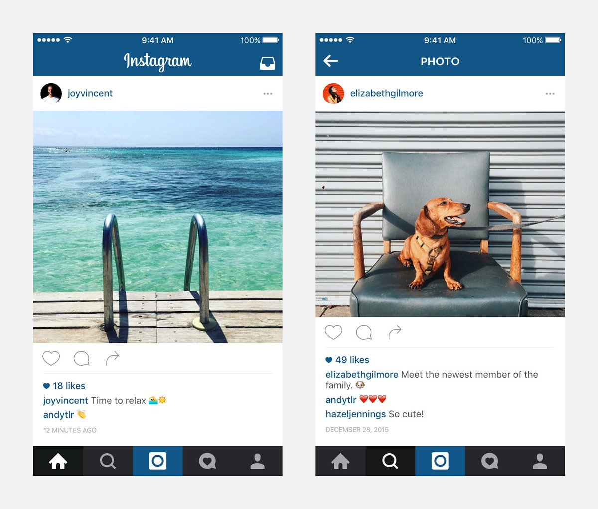

Simplicity is an important design principle that is often used when creating user interfaces. A simple design focuses on providing only the most essential elements, so that users are not overwhelmed or distracted by unnecessary information or features.
One reason simplicity is important is that it reduces cognitive load for users. By only presenting the most important information and features, designers are helping users focus on what they need to know, without being distracted by other things. This helps users complete tasks more quickly and with less frustration.
Simplicity also contributes to a clean and aesthetically pleasing user interface. By avoiding clutter and unnecessary features, you can create an experience that truly sparks joy. Simplicity not only helps users focus on the task at hand, but also gives the app a polished and delightful feel.

Another risk of not following the principle of simplicity is feature creep. This happens when apps keep adding new features, often at the expense of user experience. As more and more features are added, the app becomes cluttered and confusing. Users may have a hard time finding what they need. While it may be tempting to try to address every user need or use case, this may not be great in the long run.
One example of an app that suffers from feature creep is Facebook. Over the years, Facebook has added so many features and functionalities that the app has become quite cluttered and difficult to navigate. For example, the main menu now includes options for the news feed, stories, groups, marketplace, watch, and more. With so many options, users often have a hard time finding what they're looking for. Additionally, users are bombarded with notifications and ads, which can further distract them from the content they want to see.
Another reason to be selective about adding new features is the opportunity cost. If you spend time and resources developing a feature that only a small percentage of users will benefit from, you are not maximizing your return on investment. That time and resources could be better spent developing a feature that will benefit a larger percentage of users.
Ultimately, we need to ruthlessly prioritize when it comes to adding new features to an app. By focusing on the most important features, you can maximize your return on investment and create a better user experience.